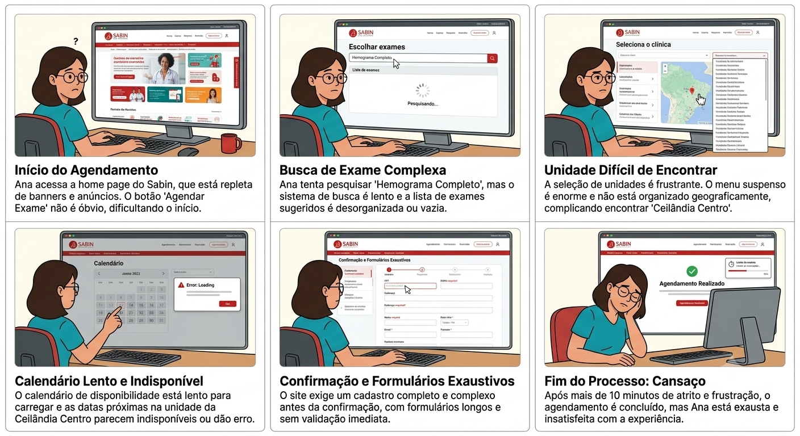
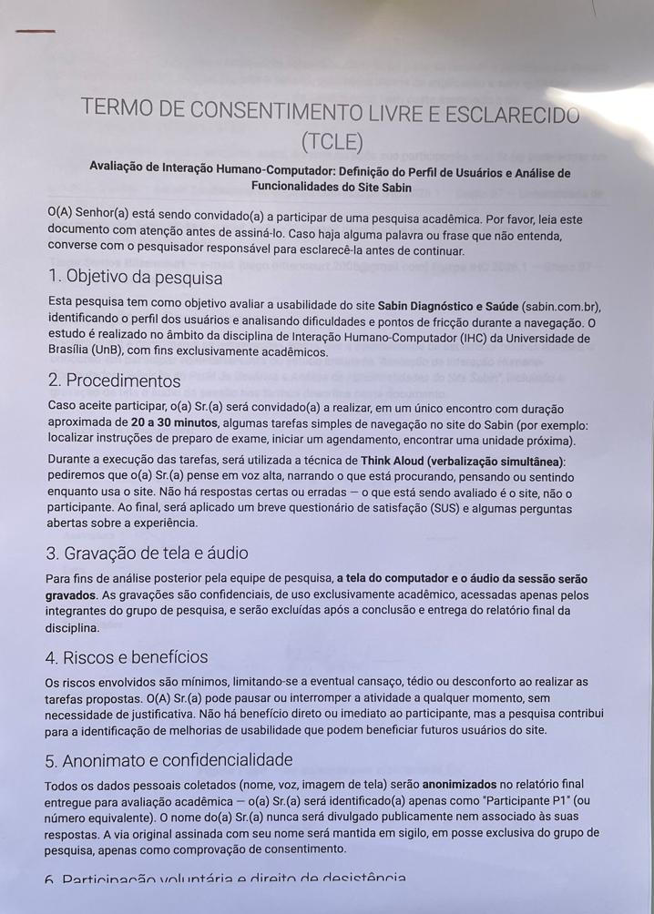
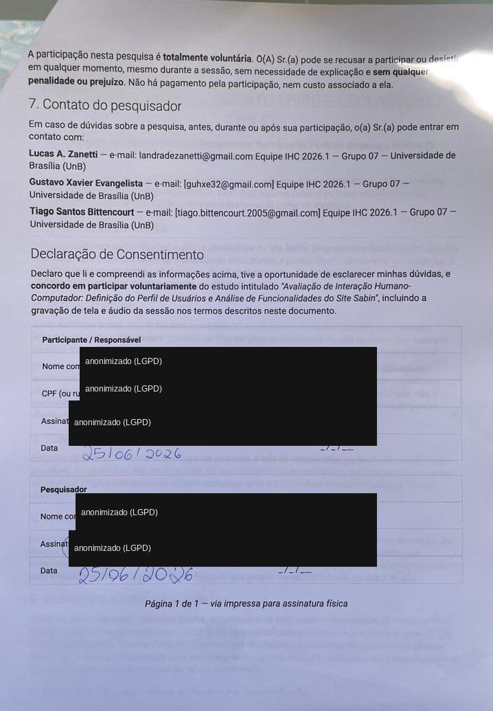

sabin.com.br/agendamento/ retorna erro 404 — o fluxo que os participantes tentavam concluir é, na prática, frágil e inconsistente.Este relatório documenta o teste de usabilidade empírico conduzido pelo Grupo 07 da disciplina de Interação Humano-Computador (IHC 2026.1, UnB) sobre o portal Sabin Diagnóstico e Saúde (sabin.com.br), um site real e público de uma das maiores redes de medicina diagnóstica do Brasil. O objetivo é avaliar empiricamente a qualidade de uso do portal nas tarefas centrais do paciente — agendar exames, agendar vacinas e localizar orientações de preparo — observando usuários reais em ação.
O estudo articula métodos consagrados de IHC: o protocolo Think Aloud (verbalização simultânea) de Nielsen (1993) para coleta qualitativa, e o instrumento validado System Usability Scale (SUS) de Brooke (1996) para mensuração da satisfação. As métricas de eficácia, eficiência e erros seguem a abordagem de Rubin & Chisnell (2008). A tarefa exigia ao menos um usuário real; o grupo conduziu sessões com três participantes (P1, P2 e P3), ampliando a base de observação.
Síntese: mesmo com participantes de alto letramento digital, o fluxo de agendamento revelou-se confuso. O termo "Compra online" não é reconhecido como "agendar exame", o botão "Agendar" desvia o usuário para o atendimento domiciliar sem aviso, e não há etapa de escolha de data. O resultado é um SUS médio de 37,5 (faixa "Inaceitável"). Em contraste, a tarefa de consultar o preparo de check-up (T3) foi resolvida sem dificuldade — confirmando que o problema está concentrado no fluxo de agendamento, não no site como um todo.
O público real do portal Sabin é amplo (pacientes de todas as idades, cuidadores, usuários de convênio). Para esta rodada, definiu-se uma persona primária e critérios objetivos de recrutamento, conforme orienta Krug (2014) ao recomendar a descrição sucinta do usuário real do produto.
| Atributo | Descrição |
|---|---|
| Nome / idade | Ana, 20 anos — "Eu sei usar tecnologia, só quero que o site não me faça perder tempo" |
| Ocupação | Estudante de Engenharia de Software (ensino superior em curso) |
| Dispositivo principal | Smartphone, com uso eventual de notebook |
| Uso de internet | Diário e intenso (estudo, redes sociais, apps de serviço) |
| Letramento digital | Alto — usuária avançada, rápida em identificar padrões de interface |
| Contexto de uso | Quer agendar exames sem telefonar, conferir preparo e acessar resultados online |
| Frustrações | Pouca paciência para fluxos longos; abandona e liga para a central se travar por 1–2 min |
Foram recrutados 3 participantes reais que se encaixam na persona, nenhum deles colega da disciplina nem envolvido na elaboração do roteiro. Critérios de exclusão aplicados: vínculo com o Sabin ou concorrente; experiência profissional em UX/Design; condução prévia de testes de usabilidade.
| Participante | Perfil | Relação com o Sabin |
|---|---|---|
| P1 | 20 anos, estudante de Eng. de Software, alto letramento digital | Já fez exames presencialmente; nunca agendou pelo site |
| P2 | 19 anos, estudante de Eng. de Software, usa celular como dispositivo principal | Já fez exames na unidade Ceilândia Centro |
| P3 | 20 anos, estudante de Eng. de Software (feminino), uso diário de internet | Conhece o Sabin; uso pouco frequente do site |
Limitação de amostra: os três participantes são estudantes de Engenharia de Software da mesma faculdade — amostra homogênea e tecnicamente fluente. Problemas que afetam idosos, pessoas com baixa literacia digital ou baixa visão podem não ter sido detectados. Os resultados são indicativos do fluxo, não conclusivos sobre toda a base de usuários do Sabin. Não foi possível incluir, nesta rodada, um participante com deficiência (recomendação opcional da metodologia) — registrado como oportunidade para a próxima rodada.
Foram redigidas três tarefas representativas, formuladas como cenários de uso (e não como instruções literais da interface), todas sem necessidade de login e em páginas/fluxos distintos do site.
"Agende um exame de hemograma completo na unidade Ceilândia Centro."
Sucesso: chegar a uma tela do fluxo de agendamento com o exame e a unidade corretos selecionados. Falha notável: não localizar o exame/unidade ou cair em erro 404."Você quer agendar uma vacina de febre amarela no site, para o seu filho de 9 meses, na unidade Águas Claras."
Sucesso: chegar ao fluxo com a vacina e a unidade selecionados. Observar: se o site comunica claramente a restrição de idade (9 meses)."Você quer ver as orientações de preparo para um agendamento de check-up executivo."
Sucesso: chegar à página do check-up executivo e indicar verbalmente as orientações de preparo.Antes do teste, a equipe mapeou hipóteses de fricção para cada fluxo (storyboards), a serem confirmadas ou refutadas pelas sessões reais:

Cada sessão (duração real: P1 — 6 min 55 s · P2 — 6 min 35 s · P3 — 10 min 22 s; média ≈ 8 min) seguiu um roteiro padronizado: boas-vindas e contextualização, tarefa de aquecimento, execução das tarefas com verbalização em voz alta, perguntas abertas pós-tarefa e questionário SUS. O avaliador não auxiliava durante as tarefas (salvo intervenção registrada após travamento prolongado) e respondia a pedidos de ajuda com "O que você tentaria fazer?".
| Item | Especificação |
|---|---|
| Modalidade | Presencial, em ambiente controlado e silencioso |
| Gravação | Tela + áudio, mediante consentimento (TCLE assinado antes do início) |
| Cronometragem | Início na leitura completa da tarefa; fim na declaração do participante ou timeout de 5 min |
| Desfecho registrado | Sucesso completo / sucesso parcial (com ajuda) / falha |
| Anotações de campo | Hesitações, erros, cliques e comentários espontâneos |
| Navegador | Google Chrome atualizado, sem histórico/login do site, 1366×768 |
Ética: foi aplicado um Termo de Consentimento Livre e Esclarecido (TCLE) contendo objetivo da pesquisa, procedimentos, aviso de gravação de tela/áudio, garantia de anonimato (identificação apenas como "P1"…"P3"), direito de desistência a qualquer momento e contato dos pesquisadores. As gravações são confidenciais, de uso acadêmico, e serão excluídas após a entrega final. (TCLE na íntegra — ver Anexo A.)
As três métricas quantitativas exigidas — taxa de sucesso (eficácia), tempo médio na tarefa (eficiência) e número de erros — foram coletadas por sessão. A taxa de sucesso pondera: sucesso sem ajuda = 1,0; sucesso com ajuda = 0,5; falha = 0.
| Part. | T1 (hemograma) | T2 (vacina) | T3 (preparo) | Erros/desvios notáveis |
|---|---|---|---|---|
| P1 | Sem ajuda · 240 s | — | — | Explorou várias abas informativas antes de achar o caminho |
| P2 | Sem ajuda · 195 s | — | — | Caiu no atendimento móvel; usou "voltar" do navegador e perdeu a busca |
| P3 | Com ajuda · 285 s | Com ajuda · 190 s | Sem ajuda · 45 s | Múltiplos caminhos errados; 2 dicas na T1, 1 dica na T2 |
Cobertura parcial: T1 foi aplicada aos 3 participantes; T2 e T3, apenas a P3 — por dificuldade de conciliar agenda com P1 e P2. As médias abaixo deixam o escopo explícito.
| Métrica | Tarefa 1 (n=3) | Tarefa 2 (n=1) | Tarefa 3 (n=1) |
|---|---|---|---|
| Taxa de sucesso (eficácia) | 83,3% (1,0 + 1,0 + 0,5)/3 | 50% (com ajuda) | 100% (sem ajuda) |
| Tempo médio (eficiência) | 240 s (240·195·285) | 190 s | 45 s |
| Conclusão sem ajuda | 2 de 3 | 0 de 1 | 1 de 1 |
| Erros/desvios | Alto (todos exploraram caminhos errados) | Alto (sobrecarga de informação) | Nenhum relevante |
A leitura cruzada é reveladora: a tarefa de busca de informação (T3) teve 100% de eficácia e 45 s, enquanto as tarefas de agendamento (T1/T2) exigiram muito mais tempo e ajuda. O gargalo está claramente no fluxo de agendamento.
Ao final das tarefas, cada participante preencheu o questionário SUS (10 itens, escala 1–5), de forma independente.
As respostas foram tabuladas item a item (planilha tabulacao_sus.xlsx). O escore varia de 0 a
100; valores abaixo de 50 são considerados de usabilidade inaceitável.
| Participante | Escore SUS | Classificação |
|---|---|---|
| P1 | 42,5 | Inaceitável (<50) |
| P2 | 37,5 | Inaceitável (<50) |
| P3 | 32,5 | Inaceitável (<50) |
| Média (n=3) | 37,5 | Inaceitável (<50) |
Os três participantes ficaram abaixo de 50 (faixa "Inaceitável") — nenhum alcançou sequer a faixa "Mediana" (50–68), o que reforça a gravidade dos problemas do fluxo de agendamento.
Respostas na escala 1–5 (1 = discordo totalmente; 5 = concordo totalmente). Itens ímpares são afirmações positivas; pares, negativas.
| # | Afirmação (SUS) | P1 | P2 | P3 |
|---|---|---|---|---|
| 1 | Gostaria de usar o site com frequência | 3 | 1 | 1 |
| 2 | Site desnecessariamente complexo | 4 | 4 | 4 |
| 3 | Site fácil de usar | 2 | 2 | 2 |
| 4 | Precisaria de suporte de pessoa técnica | 2 | 1 | 2 |
| 5 | Funções bem integradas | 2 | 2 | 2 |
| 6 | Muita inconsistência no site | 4 | 3 | 4 |
| 7 | Maioria aprenderia a usar rapidamente | 3 | 1 | 2 |
| 8 | Site muito difícil de usar | 3 | 4 | 4 |
| 9 | Senti-me confiante usando o site | 2 | 2 | 2 |
| 10 | Precisei aprender muita coisa antes de usar | 2 | 1 | 2 |
| Escore SUS | 42,5 | 37,5 | 32,5 |
Ímpares: soma das respostas − 5 · Pares: 25 − soma das respostas · Total × 2,5.
| Part. | Ímpares (1,3,5,7,9) | Pares (2,4,6,8,10) | Total × 2,5 | Escore |
|---|---|---|---|---|
| P1 | (3+2+2+3+2) − 5 = 7 | 25 − (4+2+4+3+2) = 10 | (7 + 10) × 2,5 | 42,5 |
| P2 | (1+2+2+1+2) − 5 = 3 | 25 − (4+1+3+4+1) = 12 | (3 + 12) × 2,5 | 37,5 |
| P3 | (1+2+2+2+2) − 5 = 4 | 25 − (4+2+4+4+2) = 9 | (4 + 9) × 2,5 | 32,5 |
Os itens de maior penalização, comuns aos três participantes, foram o item 2 ("site desnecessariamente complexo", 4 em todos), o item 8 ("muito difícil de usar", 3·4·4) e o item 6 ("muita inconsistência", 4·3·4) — coerentes com a confusão de taxonomia e o redirecionamento sem aviso observados nas tarefas de agendamento.
Os problemas abaixo emergiram de forma recorrente entre os participantes, com severidade na mesma escala da avaliação heurística para permitir comparação.
| ID | Problema observado | Severidade | Heurística |
|---|---|---|---|
| TU-01 | Nomenclatura ambígua. "Compra online" não é reconhecida como "agendar exame". Os participantes vasculharam abas informativas ("Exames laboratoriais", "Serviços digitais", "Atendimento domiciliar") antes de achar o caminho correto. | Crítico | H2 — Mundo real |
| TU-02 | Desvio sem aviso e sem saída. O botão "Agendar exame" no resultado da busca leva ao atendimento móvel/domiciliar; sem botão "voltar" no site, o usuário recorre ao navegador e perde a busca. | Alto | H3 / H5 |
| TU-03 | Ausência de etapa de data/horário. Nenhum participante encontrou onde escolher data — frustração explícita ao final do fluxo. | Crítico | H1 — Status |
"Achei os termos um pouco confusos… a primeira opção é agendar exame, mas ele vai para um local que não faz sentido, que é o atendimento domiciliar. A opção certa é comprar exame…" — P2
"Tô procurando onde que eu vou agendar um exame… Acho que não é aqui, né? Não tô achando." / "Ah, tá. Então eu tenho que comprar meu exame aqui primeiro?" — P3
"Foi bem mais fácil e mais intuitivo de encontrar as orientações." — P3, sobre a Tarefa 3
Relação com o achado catastrófico do site: a Tarefa 1 está diretamente ligada à rota de agendamento, que
— em inspeção técnica — retorna erro 404 quando acessada por /agendamento/, reforçando a fragilidade do fluxo
central:
sabin.com.br/agendamento/ retorna erro 404 — o fluxo que os participantes tentavam concluir é, na prática, frágil e inconsistente.Embora a rodada não tenha incluído participante com deficiência, as tarefas tocaram em elementos que impactam diretamente a acessibilidade. Os achados WCAG mais relevantes para essas jornadas (detalhados na avaliação de acessibilidade do grupo) são:
| Critério WCAG 2.2 | Constatação no fluxo testado | Status |
|---|---|---|
| 1.3.1 / 2.4.2 — Títulos e semântica (A) | Homepage sem <h1> (confirmado ao vivo): usuário de leitor de tela não identifica o título da página de partida das tarefas. | Não Conforme |
| 2.4.1 — Skip links (A) | Nenhum link "pular para o conteúdo": navegação por teclado tabula por todo o menu antes de chegar ao conteúdo. | Não Conforme |
| 2.4.7 — Foco visível (AA) | Ausência de :focus-visible: a posição do teclado fica imperceptível nos botões dos fluxos de agendamento. | Não Conforme |
| 3.3.1 — Identificação de erros (A) | Portal de resultados sem <label> nem orientação de formato da credencial. | Não Conforme |
| 1.4.3 — Contraste (AA) | Textos de apoio em #999 (~2,85:1) abaixo do mínimo de 4,5:1. | Não Conforme |

<h2> — não há <h1>, prejudicando a orientação por leitor de tela.Para um usuário com deficiência visual, a combinação desses fatores tornaria as tarefas de agendamento — já difíceis para usuários videntes fluentes — possivelmente inviáveis sem assistência.
| Prioridade | Ação recomendada | Resolve |
|---|---|---|
| Imediata | Renomear "Compra online" para "Agendar exame" de forma consistente em todos os pontos de contato. | TU-01 |
| Imediata | Corrigir a rota /agendamento/ (404) e garantir um caminho único e óbvio para o agendamento. | TU-01, fluxo central |
| Imediata | Incluir etapa explícita de seleção de data e horário antes da confirmação. | TU-03 |
| Alta | Ao acionar "Agendar", oferecer escolha clara (Unidade física × Domiciliar) em vez de redirecionar sem aviso; adicionar botão "voltar" interno. | TU-02 |
| Alta | Adicionar <h1>, skip link e :focus-visible; corrigir contraste dos textos de apoio. | Acessibilidade (WCAG A/AA) |
| Média | Reduzir a sobrecarga de informação na listagem de vacinas e adicionar busca interna. | T2 — "muita informação" |
O teste confirmou empiricamente o que a inspeção especialista previa: o portal Sabin cumpre bem as tarefas de informação, mas falha nas tarefas de ação (agendamento). O dado mais eloquente é o contraste interno da própria sessão de P3 — perdida e dependente de ajuda nas tarefas de agendamento (T1/T2), porém rápida e confiante na busca de preparo (T3). Isso isola o problema: não é o site inteiro que é ruim, é o modelo conceitual do agendamento que está desalinhado da expectativa do usuário.
Do ponto de vista de aprendizado, a rodada evidenciou o valor do Think Aloud: métricas isoladas (a T1 teve 83% de eficácia) podem mascarar uma experiência ruim, mas as verbalizações ("então eu tenho que comprar meu exame primeiro?") expõem o atrito cognitivo real. O SUS médio de 37,5 traduz numericamente essa insatisfação.
As principais limitações a corrigir em rodadas futuras são: (1) a amostra homogênea de estudantes de tecnologia, que não representa o público diverso do Sabin; (2) a cobertura parcial de tarefas (T2/T3 apenas com P3); e (3) a ausência de um participante com deficiência — recomendação opcional da metodologia que, se cumprida, tornaria os achados de acessibilidade empíricos, e não apenas inspecionais. Ainda assim, mesmo uma amostra pequena e fluente foi suficiente para revelar problemas críticos — o que reforça, na prática, a tese de Nielsen de que poucos usuários já expõem a maioria dos problemas graves de usabilidade.
BROOKE, John. SUS: A "Quick and Dirty" Usability Scale. In: JORDAN, P. W. et al. (eds.). Usability Evaluation in Industry. London: Taylor & Francis, 1996. p. 189–194.
ERICSSON, K. A.; SIMON, H. A. Protocol Analysis: Verbal Reports as Data. Cambridge: MIT Press, 1993.
KRUG, Steve. Não Me Faça Pensar: Uma Abordagem de Bom Senso à Usabilidade Web e Mobile. 3. ed. Rio de Janeiro: Alta Books, 2014.
NIELSEN, Jakob. Usability Engineering. San Diego: Academic Press, 1993.
RUBIN, Jeffrey; CHISNELL, Dana. Handbook of Usability Testing. 2. ed. Indianapolis: Wiley, 2008.
W3C. Web Content Accessibility Guidelines (WCAG) 2.2. 2023. Disponível em: https://www.w3.org/TR/WCAG22/.
Antes de cada sessão, o participante leu e assinou um Termo de Consentimento Livre e Esclarecido (TCLE) contendo: objetivo da pesquisa; procedimentos (3 tarefas, ~20–30 min, Think Aloud); aviso de gravação de tela e áudio; garantia de anonimato (identificação apenas como "P1"…"P3"); direito de desistência sem penalidade; e contato dos pesquisadores responsáveis (Equipe IHC 2026.1 — Grupo 07, UnB). As vias assinadas ficam sob guarda do grupo, exclusivamente como comprovação do consentimento.


Detalhamento qualitativo e quantitativo de cada execução observada (fonte: planilha tabulacao_metricas.xlsx).
A T1 foi aplicada aos 3 participantes; T2 e T3, apenas a P3.
Caminho percorrido
Menu › Exames laboratoriais › Preparo de exames › Serviços digitais › Unidades › Compra online › Busca › Comprar › Nossas unidades › Ceilândia Centro
Erros e desvios
Procurou o agendamento em abas informativas antes de ir para "Compra online".
Verbalização marcante
"Eu achei bem complicado. Os nomes não eram o que eu estava esperando… Eu senti falta também na questão da data."
Observação do avaliador
Explorou grande parte do menu principal tentando achar a opção correta — a taxonomia do menu não está alinhada ao modelo mental.
Caminho percorrido
Página inicial › Menu principal › Abas informativas › Busca › "Agendar o exame" (cai em atendimento móvel) › Voltar do navegador › Comprar online › Ceilândia Centro
Erros e desvios
Clicou em "Agendar o exame" e foi para atendimento domiciliar; não encontrou botão "voltar" no site.
Verbalização marcante
"Achei os termos um pouco confusos… a primeira opção é agendar exame, mas ele vai para um local que não faz sentido… Senti falta de data."
Observação do avaliador
Evidenciou um problema grave de taxonomia — "comprar" não é associado a "agendar".
Caminho percorrido
Botão agendamento › Pré-cadastro › Solicitação de exames › Conteúdo de apoio › Serviços digitais › Agilizar exames › Menu (1ª dica) › Compre online (2ª dica) › Busca › Comprar exame
Erros e desvios
Procurou o agendamento em várias telas antes do caminho correto; só chegou ao fluxo certo após duas dicas do avaliador.
Verbalização marcante
"Vou apertar no botão de agendamento, que faz sentido… Acho que não é aqui, né, mano? Não tô achando… Então eu tenho que comprar meu exame aqui primeiro."
Observação do avaliador
Participante visivelmente perdida — reforça nomenclaturas confusas e o redirecionamento-surpresa.
Caminho percorrido
Menu › Vacinas › Agendar na unidade › Águas Claras › Tela da unidade › Compre online › Menu (dica) › Vacinas infantis (9 meses) › Vacina de febre amarela › Águas Claras
Erros e desvios
Tentou agendar pela página da unidade e pelo "Compre online" antes de achar o caminho por "Vacinas infantis", com a ajuda do avaliador.
Verbalização marcante
"Meu Deus, muita informação. Eu queria pesquisar a vacina de febre amarela, mas não sei como faz isso. Vou clicar em vacinas infantis porque meu filho tem 9 meses."
Observação do avaliador
O mesmo problema de taxonomia da T1 se repete no fluxo de vacinas.
Caminho percorrido
Menu › Exames › Check-up executivo › rola a página › Orientações de preparo
Erros e desvios
Nenhum desvio relevante — caminho direto pelo menu.
Verbalização marcante
"Tô descendo a tela aqui para achar a orientação. Orientações de preparo. Achei."
Observação do avaliador
Bem mais fácil e intuitivo de encontrar as orientações — contraste claro com o fluxo de agendamento.
| Artefato | Endereço |
|---|---|
| Planejamento do teste | unb-ihc.github.io/IHC_2026.1_Grupo07/ihc-sabin/teste-usabilidade/planejamento/ |
| Persona do participante | unb-ihc.github.io/IHC_2026.1_Grupo07/ihc-sabin/teste-usabilidade/persona/ |
| Roteiro de tarefas | unb-ihc.github.io/IHC_2026.1_Grupo07/ihc-sabin/teste-usabilidade/roteiro/ |
| Questionário SUS | unb-ihc.github.io/IHC_2026.1_Grupo07/ihc-sabin/teste-usabilidade/questionario-sus/ |
| Tabulação de métricas (planilha) | relatorio-teste-usabilidade/img/tabulacao_metricas.xlsx |
| Tabulação do SUS (planilha) | relatorio-teste-usabilidade/img/tabulacao_sus.xlsx |
| TCLE | unb-ihc.github.io/IHC_2026.1_Grupo07/ihc-sabin/teste-usabilidade/tcle/ |
| Resultados completos (3 sessões + vídeos) | unb-ihc.github.io/IHC_2026.1_Grupo07/ihc-sabin/teste-usabilidade/resultados/ |
Gravações das sessões (P1, P2, P3) disponíveis de forma anonimizada no YouTube, vinculadas na página de resultados. Evidências de site capturadas em 26/06/2026.